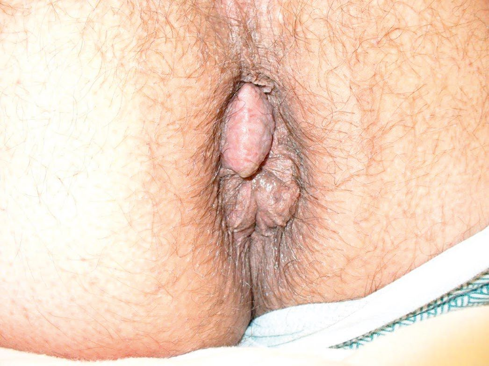
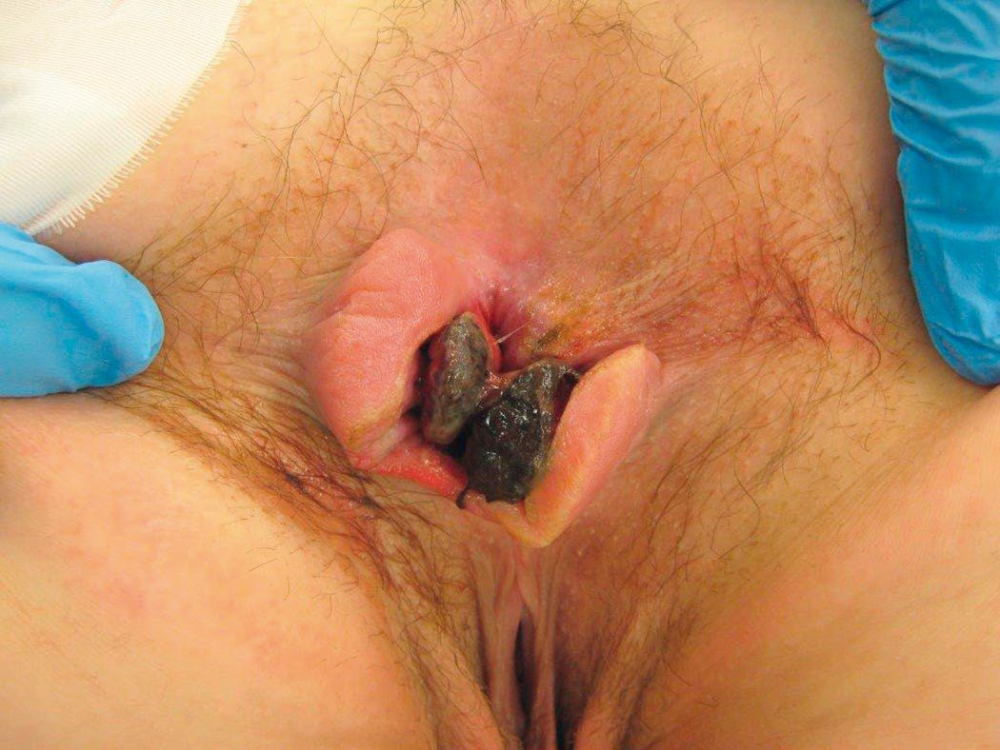
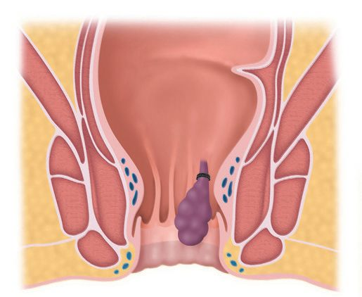
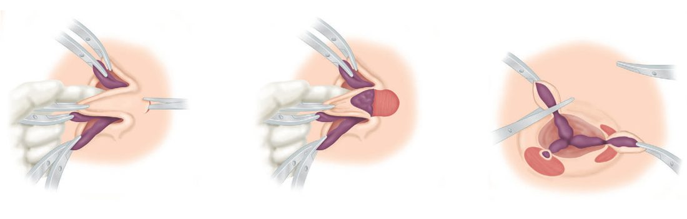

Hemorrhoids
Summary
- Haemorrhoids are symptomatic enlargements of the normal anal cushions (submucosal vascular tissue that helps maintain continence) commonly presenting with painless bright-red rectal bleeding, prolapse and pruritus [1].
- They are graded first- to fourth-degree according to the extent of prolapse [1].
- Management ranges from dietary/lifestyle measures through outpatient procedures (injection sclerotherapy, rubber band ligation) to surgical haemorrhoidectomy for more advanced disease [1][2].
Definition
Haemorrhoids are symptomatic enlargements of the internal haemorrhoidal venous plexus (Greek haima = blood, rhoos = flowing) [1]. Internal haemorrhoids lie proximal to the dentate line and are covered by insensate anorectal mucosa; external haemorrhoids relate to the inferior haemorrhoidal plexus in the skin around the anal verge and are often confused with anal skin tags, which are not true haemorrhoids [1][3].
Pathophysiology
- The internal haemorrhoidal plexus forms the submucosal component of the anal cushions that help seal the anal canal.
- Man's upright posture, absence of valves in the portal venous system, and raised abdominal pressure (pregnancy, straining at defecation) contribute to venous engorgement and varicosity formation [1].
- Shearing forces cause mucosal trauma (bleeding) and caudal displacement of the anal cushions (prolapse), impairing venous drainage and causing further engorgement, stasis and transudation of fluid (pruritus); with age, fragmentation of the supporting connective tissue causes loss of elasticity so the cushions no longer retract after defecation [1].
- Internal haemorrhoids characteristically occur at the 3, 7 and 11 o'clock positions (lithotomy position), corresponding to the main anal blood vessel pedicles [1][2].
- The bright red colour of haemorrhoidal bleeding reflects free arteriovenous communication within the submucosal venous dilatations, giving the blood a more arterial oxygen tension than would be expected of venous blood [1].
Clinical features
- Bleeding is usually the earliest symptom, characteristically separate from the stool, seen on the paper or as a fresh splash in the pan, and rarely sufficient to cause anaemia (other causes of bleeding should be excluded) [1].
- Pruritus from mucus discharge is common; pain suggests an alternative diagnosis such as anal fissure, unless there is thrombosis [1][4].
- Patients may describe a lump appearing at the anal orifice on defecation [2].

Etiology
Constipation, chronic straining, obesity and previous childbirth are recognised associations [2]. Haemorrhoids rarely start after age 55, and an alternative cause of symptoms should be assumed until proven otherwise in older patients [2].
Diagnosis
Diagnosis is usually made by rigid sigmoidoscopy and proctoscopy; flexible sigmoidoscopy or colonoscopy is used when there is diagnostic uncertainty about the cause of symptoms, particularly bleeding [2]. Colorectal malignancy and other causes of rectal bleeding must be excluded before treatment [1].
Scoring and Severity
Internal haemorrhoids are graded by the degree of prolapse [1][3]:
- First degree: bleed only, bulge into the anal canal, no prolapse beyond the anal verge.
- Second degree: prolapse through the anus on straining but reduce spontaneously.
- Third degree: prolapse through the anal canal and require manual reduction.
- Fourth degree: permanently prolapsed and irreducible, at risk of strangulation.
"Mixed" haemorrhoids describes a significant cutaneous (external) component arising from repeated congestion of a prolapsing internal haemorrhoid [1].

Treatment and Management
- First-line management addresses bowel and defecatory habits, minimising straining, and adding stool softeners/bulking agents; proprietary creams and phlebotonic suppositories may be used [1].
- For first- or second-degree internal haemorrhoids not improved by conservative measures, injection sclerotherapy (5% phenol in arachis/almond oil, 3–5 mL injected into the pedicle apex, not the haemorrhoid itself) induces fibrosis; injection too superficial causes mucosal ulceration, while too deep can cause prostatitis or pelvic sepsis [1]. Rubber band ligation (Barron's bander) has largely superseded injection, applying an elastic band above the dentate line to cause ischaemic necrosis and sloughing within about 10 days, with associated bleeding; all three primary haemorrhoids may be treated in one session [1].
- Complications of banding include bleeding at 7–10 days, urinary retention (~1%, more likely if internal sphincter is inadvertently included) and rare but life-threatening necrotising pelvic infection presenting with severe pain, fever and urinary retention, requiring immediate examination under anaesthesia [3].
- Thrombosed/strangulated haemorrhoids are usually managed conservatively (analgesia, bed rest, cold compresses, laxatives, resolution in 3–4 days) as acute haemorrhoidectomy risks over-excision of anal tissue, though urgent haemorrhoidectomy may be considered for impending necrosis [1][4].

Surgeries
Indications for haemorrhoidectomy: third- and fourth-degree haemorrhoids; second-degree disease failing non-operative treatment; well-defined mixed haemorrhoids; and bleeding causing anaemia [1].
- Open (Milligan–Morgan) haemorrhoidectomy: the anal mucosa and skin are left open to heal by secondary intention after ligation and excision of each haemorrhoidal pedicle, preserving mucocutaneous bridges to avoid stenosis [1].
- Closed (Ferguson) haemorrhoidectomy: the popular US technique, in which the wound is sutured after excision [1].
- Stapled haemorrhoidopexy (PPH, procedure for prolapse and haemorrhoids, Longo): a circular stapling device excises a cylinder of mucosa/submucosa above the dentate line and staples the mucosal ends together; less painful with quicker recovery than conventional haemorrhoidectomy, but higher recurrence and risk of serious complications (staple-line dehiscence, rectovaginal fistula, tenesmus) [1].
- Transanal haemorrhoidal (Doppler-guided) ligation (HAL): ligates the feeding vessels ± mucopexy; the HubBLe trial found lower recurrence than rubber band ligation but poorer cost-effectiveness, with better pain scores and complication rates than conventional surgery [1].
- Other ablative techniques (cryotherapy, infrared photocoagulation) are not commonly used [1].

Complications
Strangulation and thrombosis, ulceration, gangrene, and portal pyaemia are recognised complications of haemorrhoids themselves [1]. Postoperative complications of haemorrhoidectomy are early, pain, acute urinary retention (especially in men), and reactionary haemorrhage (more common than secondary haemorrhage, may require return to theatre) (and late) secondary haemorrhage (around day 7–8), anal stricture, anal fissure/submucous abscess, and incontinence from inadvertent internal sphincter damage [1].
Prognosis
Symptomatic relief is good with appropriately staged treatment; recurrence is more likely after less invasive procedures (injection, banding, HAL) than after formal haemorrhoidectomy, but formal excision carries higher rates of pain and complication [1]. Not covered in source textbooks beyond these comparative outcome statements, no overall survival/prognostic scoring system applies to this benign condition.
References
- Bailey & Love's Short Practice of Surgery, 28th ed., Ch. 80 The anus and anal canal
- Oxford Handbook of Clinical Surgery, 5th ed., Ch. 12 Colorectal surgery
- Schwartz's Principles of Surgery: ABSITE and Board Review, Ch. 29 Colon, Rectum, and Anus
- Oxford Handbook of Clinical Surgery, 5th ed., Ch. 26 Emergency surgery topics
- Sabiston Textbook of Surgery, 22nd ed., Ch. 97